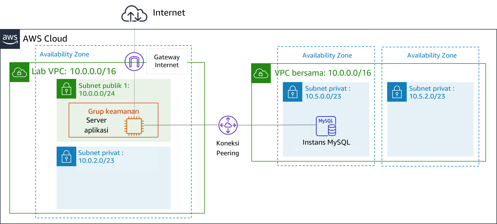
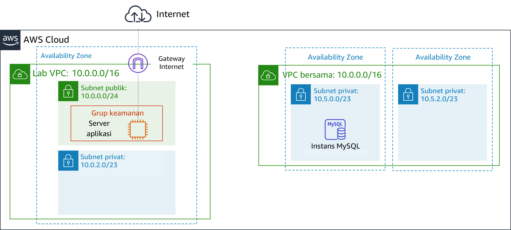
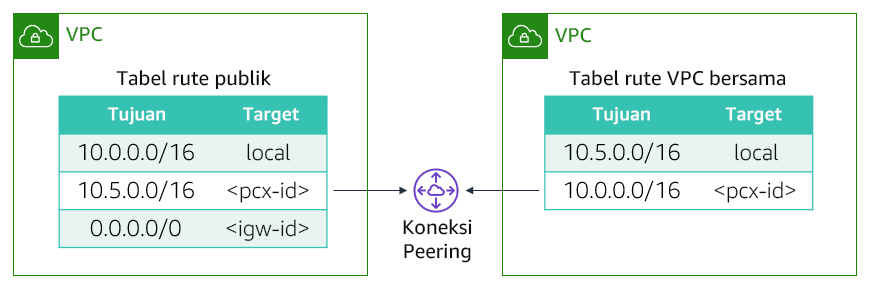

Anda mungkin ingin menghubungkan virtual private cloud (VPC) Anda ketika harus mentransfer data di antara keduanya. Lab ini menunjukkan cara membuat koneksi peering VPC pribadi antara dua VPC.
Setelah menyelesaikan lab ini, Anda akan mampu:
Pada akhir lab ini, arsitektur Anda akan terlihat seperti contoh berikut:

Diperlukan waktu sekitar 20 menit untuk menyelesaikan lab ini.
Dalam lingkungan lab ini, akses ke layanan AWS dan tindakan layanan mungkin dibatasi untuk orang-orang yang diperlukan untuk menyelesaikan instruksi lab. Anda mungkin akan mengalami error jika mencoba mengakses layanan lain atau melakukan tindakan di luar yang dijelaskan di lab ini.
Di bagian atas instruksi ini, pilih Start Lab (Mulai Lab) untuk meluncurkan lab Anda.
Panel Start Lab (Mulai Lab) terbuka dan menampilkan status lab.
Tip: Jika Anda memerlukan lebih banyak waktu untuk menyelesaikan lab, mulai ulang pengatur waktu untuk lingkungan dengan memilih tombol Start Lab (Mulai Lab) lagi.
Tunggu hingga panel Start Lab (Mulai Lab) menampilkan pesan Lab status: ready (Status lab: siap), lalu tutup panel dengan memilih X.
Di bagian atas instruksi ini, pilih AWS.
Tindakan ini akan membuka Konsol Manajemen AWS di tab browser baru. Anda akan masuk ke sistem secara otomatis.
Tip: Jika tab browser baru tidak terbuka, banner atau ikon biasanya berada di bagian atas browser Anda dengan pesan bahwa browser Anda mencegah situs membuka jendela sembulan. Pilih banner atau ikon, lalu pilih Allow pop-ups (Izinkan sembulan).
Atur tab AWS Management Console(Konsol Manajemen AWS) agar ditampilkan bersama instruksi ini. Idealnya, Anda perlu membuka kedua tab browser secara bersamaan, sehingga Anda dapat mengikuti langkah-langkah lab dengan lebih mudah.
Jangan mengubah Wilayah kecuali secara khusus diperintahkan untuk melakukannya.
Tugas Anda adalah untuk membuat koneksi peering VPC antara dua VPC.
Koneksi peering VPC** adalah koneksi jaringan satu lawan satu antara dua VPC yang memungkinkan Anda mengarahkan rute lalu lintas di antara keduanya secara pribadi. Instans di masing-masing VPC dapat saling berkomunikasi seakan-akan berada dalam jaringan yang sama. Anda dapat membuat koneksi peering VPC di antara VPC Anda sendiri, dalam suatu VPC di akun AWS yang lain, atau dengan VPC di Wilayah AWS yang berbeda.
Dua VPC disediakan sebagai bagian dari lab ini: Lab VPC dan VPC Bersama. Lab VPC memiliki aplikasi Inventory yang berjalan pada instans Amazon Elastic Compute Cloud (Amazon EC2) di subnet publik. VPC Bersama memiliki basis data instans yang berjalan di subnet privat.

Di AWS Management Console (Konsol Manajemen AWS), pada menu Services (Layanan), pilih VPC.
Di panel navigasi kiri, pilih Peering Connections (Koneksi Peering).
Pilih Create Peering Connection (Buat Koneksi Peering) dan konfigurasikan:
Lab-PeerKetika koneksi peering VPC dibuat, VPC target harus menerima permintaan sambungan. VPC target harus menerima permintaan karena mungkin dimiliki oleh akun yang berbeda. Atau, pengguna yang membuat koneksi peering mungkin tidak memiliki izin untuk menerima permintaan koneksi untuk VPC target. Akan tetapi, dalam lab ini, Anda sendiri yang akan menerima koneksi tersebut.
Pilih Lab-Peer.
Pilih Actions (Tindakan) lalu pilih Accept Request (Terima Permintaan), dan pilih Yes, Accept (Ya, Terima) untuk menerima permintaan.
Di kotak sembulan, pilih Close (Tutup).
Anda kini akan memperbarui tabel rute di kedua VPC untuk mengirimkan lalu lintas dari Lab VPC ke koneksi peering untuk Shared VPC.

Anda akan mengonfigurasi Public Route Table (Tabel Rute Publik) yang dikaitkan dengan Lab VPC. Jika alamat IP tujuan berada dalam jangkauan VPC Bersama, Tabel Rute Publik akan mengirim lalu lintas ke koneksi peering.
10.5.0.0/16 (Pengaturan ini adalah Classless Inter-Domain Route, atau CIDR, jangkauan blok VPC Bersama.)Sekarang Anda akan mengonfigurasi arus balik untuk lalu lintas yang datang dari VPC Bersama menuju Lab VPC.
Tabel rute ini adalah untuk VPC Bersama. Anda akan mengonfigurasinya untuk mengirimkan lalu lintas ke koneksi peering jika alamat IP tujuan berada di dalam jangkauan Lab VPC.
10.0.0.0/16 (Pengaturan ini adalah jangkauan blok CIDR dari Lab VPC.)Tabel rute kini telah dikonfigurasi untuk mengirimkan lalu lintas melalui koneksi peering ketika lalu lintas tersebut ditujukan untuk VPC lainnya.
Karena telah mengonfigurasi peering VPC, kini Anda akan menguji koneksi peering VPC. Anda akan melakukan pengujian ini dengan mengonfigurasi aplikasi Inventory untuk mengakses basis data di koneksi peering.
Anda akan melihat aplikasi Inventory dan pesan berikut: “Please configure settings to connect to database” (Konfigurasi pengaturan untuk menghubungkan ke basis data)
inventory (inventaris)adminlab-passwordKini aplikasi tersebut seharusnya menampilkan data dari basis data.
Langkah ini mengonfirmasi bahwa koneksi peering VPC sudah dibuat karena VPC Bersama tidak memiliki gateway internet. Satu-satunya cara untuk mengakses basis data adalah melalui koneksi peering VPC ini.
Tip: Anda dapat mengirimkan pekerjaan Anda beberapa kali. Setelah Anda mengubah pekerjaan, pilih Submit (Kirim) lagi. Apa yang akan direkam untuk lab ini adalah pengiriman terakhir Anda.
Selamat! Anda telah menyelesaikan lab.
Sebuah panel menunjukkan bahwa *DELETE has been initiated... * (Penghapusan sudah dimulai...) You may close this message box now. (Anda dapat menutup kotak pesan ini sekarang.)
©2020 Amazon Web Services, Inc. dan afiliasinya. Hak cipta dilindungi undang-undang. Karya ini tidak boleh direproduksi atau didistribusikan ulang, seluruhnya atau sebagian, tanpa izin tertulis sebelumnya dari Amazon Web Services, Inc. Dilarang menyalin, meminjamkan, atau menjual secara komersial.